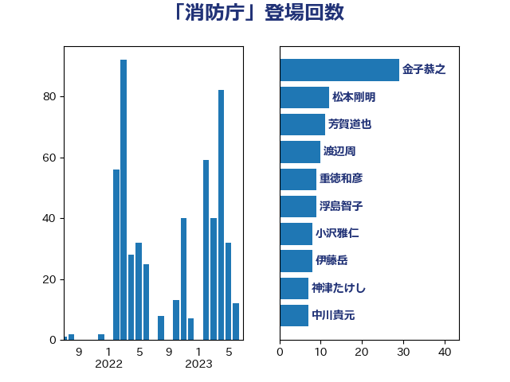

単語「消防庁」

| 金子恭之 | 自由民主党 | 29 回 |
| 松本剛明 | 自由民主党 | 12 回 |
| 芳賀道也 | 国民民主党 | 11 回 |
| 渡辺周 | 立憲民主党 | 10 回 |
| 重徳和彦 | 立憲民主党 | 9 回 |
| 浮島智子 | 公明党 | 9 回 |
| 小沢雅仁 | 立憲民主党 | 8 回 |
| 伊藤岳 | 日本共産党 | 8 回 |
| 神津たけし | 立憲民主党 | 7 回 |
| 中川貴元 | 自由民主党 | 7 回 |
| 鳩山二郎 | 自由民主党 | 6 回 |
| 高橋千鶴子 | 日本共産党 | 6 回 |
| 近藤昭一 | 立憲民主党 | 6 回 |
| 赤羽一嘉 | 公明党 | 6 回 |
| 緒方林太郎 | 無所属 | 6 回 |
| 橋本岳 | 自由民主党 | 6 回 |
| 尾身朝子 | 自由民主党 | 6 回 |
| 奥下剛光 | 日本維新の会 | 6 回 |
| 白石洋一 | 立憲民主党 | 5 回 |
| 江藤拓 | 自由民主党 | 5 回 |
| 榛葉賀津也 | 国民民主党 | 5 回 |
| 柴田巧 | 日本維新の会 | 5 回 |
| 高橋光男 | 公明党 | 4 回 |
| 輿水恵一 | 公明党 | 4 回 |
| 西野太亮 | 自由民主党 | 4 回 |
| 田畑裕明 | 自由民主党 | 4 回 |
| 田村貴昭 | 日本共産党 | 4 回 |
| 沢田良 | 日本維新の会 | 4 回 |
| 池下卓 | 日本維新の会 | 4 回 |
| 早稲田ゆき | 立憲民主党 | 4 回 |
| 岩谷良平 | 日本維新の会 | 4 回 |
| 吉川沙織 | 立憲民主党 | 4 回 |
| 佐藤啓 | 自由民主党 | 4 回 |
| 音喜多駿 | 日本維新の会 | 3 回 |
| 金城泰邦 | 公明党 | 3 回 |
| 道下大樹 | 立憲民主党 | 3 回 |
| 柳ヶ瀬裕文 | 日本維新の会 | 3 回 |
| 柚木道義 | 立憲民主党 | 3 回 |
| 小里泰弘 | 自由民主党 | 3 回 |
| 古賀之士 | 立憲民主党 | 3 回 |
| 中川康洋 | 公明党 | 3 回 |
| 阿部知子 | 立憲民主党 | 2 回 |
| 阿部弘樹 | 日本維新の会 | 2 回 |
| 野田国義 | 立憲民主党 | 2 回 |
| 遠藤良太 | 日本維新の会 | 2 回 |
| 谷公一 | 自由民主党 | 2 回 |
| 西岡秀子 | 国民民主党 | 2 回 |
| 石田真敏 | 自由民主党 | 2 回 |
| 石川香織 | 立憲民主党 | 2 回 |
| 森本真治 | 立憲民主党 | 2 回 |
| 本田顕子 | 自由民主党 | 2 回 |
| 木原稔 | 自由民主党 | 2 回 |
| 星野剛士 | 自由民主党 | 2 回 |
| 斉藤鉄夫 | 公明党 | 2 回 |
| 岡本あき子 | 立憲民主党 | 2 回 |
| 山本博司 | 公明党 | 2 回 |
| 大野敬太郎 | 自由民主党 | 2 回 |
| 大塚拓 | 自由民主党 | 2 回 |
| 大口善徳 | 公明党 | 2 回 |
| 加藤勝信 | 自由民主党 | 2 回 |
| 佐藤正久 | 自由民主党 | 2 回 |
| 中司宏 | 日本維新の会 | 2 回 |
| 三ッ林裕巳 | 自由民主党 | 2 回 |
| ながえ孝子 | 無所属 | 2 回 |
| おおつき紅葉 | 立憲民主党 | 2 回 |
| 鬼木誠 | 立憲民主党 | 1 回 |
| 長谷川英晴 | 自由民主党 | 1 回 |
| 鈴木馨祐 | 自由民主党 | 1 回 |
| 近藤和也 | 立憲民主党 | 1 回 |
| 赤澤亮正 | 自由民主党 | 1 回 |
| 菊田真紀子 | 立憲民主党 | 1 回 |
| 竹内譲 | 公明党 | 1 回 |
| 福島みずほ | 社会民主党 | 1 回 |
| 福山哲郎 | 立憲民主党 | 1 回 |
| 神谷宗幣 | 参政党 | 1 回 |
| 石井苗子 | 日本維新の会 | 1 回 |
| 田村智子 | 日本共産党 | 1 回 |
| 田所嘉徳 | 自由民主党 | 1 回 |
| 片山大介 | 日本維新の会 | 1 回 |
| 熊谷裕人 | 立憲民主党 | 1 回 |
| 熊田裕通 | 自由民主党 | 1 回 |
| 滝波宏文 | 自由民主党 | 1 回 |
| 湯原俊二 | 立憲民主党 | 1 回 |
| 渡辺創 | 立憲民主党 | 1 回 |
| 清水貴之 | 日本維新の会 | 1 回 |
| 浜野喜史 | 国民民主党 | 1 回 |
| 泉健太 | 立憲民主党 | 1 回 |
| 河野太郎 | 自由民主党 | 1 回 |
| 江田憲司 | 立憲民主党 | 1 回 |
| 江島潔 | 自由民主党 | 1 回 |
| 横山信一 | 公明党 | 1 回 |
| 梅村みずほ | 日本維新の会 | 1 回 |
| 根本匠 | 自由民主党 | 1 回 |
| 松野明美 | 日本維新の会 | 1 回 |
| 杉尾秀哉 | 立憲民主党 | 1 回 |
| 末松義規 | 立憲民主党 | 1 回 |
| 木原誠二 | 自由民主党 | 1 回 |
| 後藤茂之 | 自由民主党 | 1 回 |
| 岬麻紀 | 日本維新の会 | 1 回 |
| 岩本剛人 | 自由民主党 | 1 回 |
| 山谷えり子 | 自由民主党 | 1 回 |
| 大河原まさこ | 立憲民主党 | 1 回 |
| 國場幸之助 | 自由民主党 | 1 回 |
| 吉田久美子 | 公明党 | 1 回 |
| 古賀千景 | 立憲民主党 | 1 回 |
| 住吉寛紀 | 日本維新の会 | 1 回 |
| 伊藤俊輔 | 立憲民主党 | 1 回 |
| 仁木博文 | 無所属 | 1 回 |
| 中根一幸 | 自由民主党 | 1 回 |
| 中川宏昌 | 公明党 | 1 回 |
| 三浦信祐 | 公明党 | 1 回 |
| 三木圭恵 | 日本維新の会 | 1 回 |